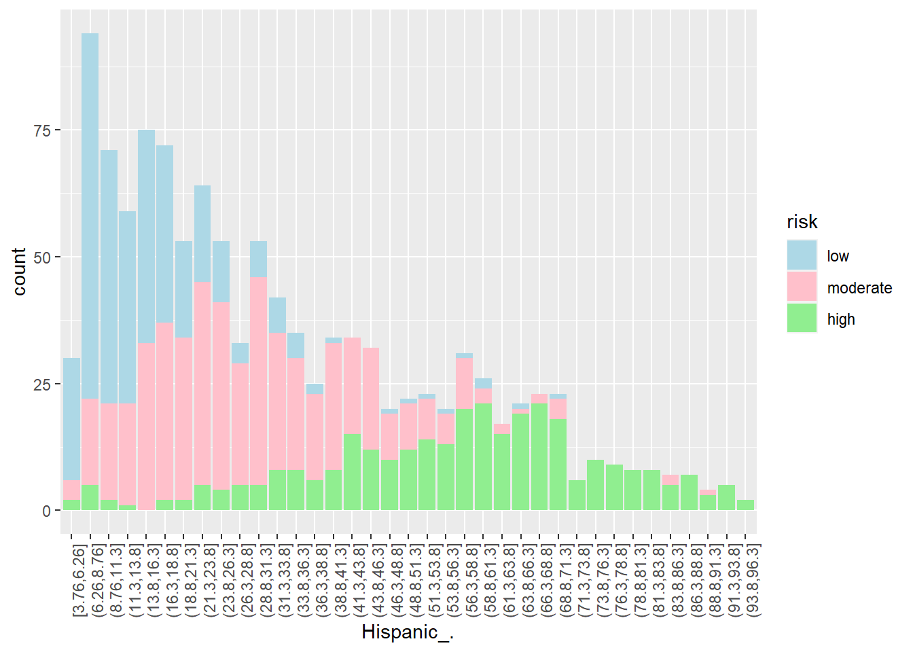

Using Machine Learning Models to Predict Covid-19 Outbreak Risk in Californian Cities
Author
Lyndsey Umsted
Introduction
This project is intended to build and deploy a machine learning classification model which categorizes California zip codes into low, moderate, or high risk for Covid-19 outbreaks by the end of the year of 2020. Risk predictions of Covid-19 were made using 30 different predictors including socioeconomic factors, and abiotic factors such as temperature, and pollution indicators. This project originates from a personal interest in public health and previous studying done on disease dynamics.
Packages and Libraries:
library(corrplot) # for the correlation plotlibrary(discrim) # for linear discriminant analysislibrary(corrr) # for calculating correlationlibrary(knitr) # to help with the knitting processlibrary(MASS) # to assist with the markdown processeslibrary(tidyverse) # using tidyverse and tidymodels for this project mostlylibrary(tidymodels)library(ggplot2) # for most of our visualizationstidymodels_prefer()library(ISLR) library(ISLR2) library(poissonreg)library(klaR) # for naive bayeslibrary(randomForest)library(vip)
Warning: package 'vip' was built under R version 4.2.2
library(dplyr)
What is Covid-19?
Coronavirus disease (COVID-19) is an infectious disease caused by the SARS-CoV-2 virus. Most people infected with the virus will experience mild to moderate respiratory illness and recover without requiring special treatment. Some people become seriously ill and require medical attention. Older people and those with underlying medical conditions are more likely to develop serious illness and hospitalizaton. COVID-19 can affect people of all ages, including death. The virus can spread from an infected person’s mouth or nose in small liquid particles when they cough, sneeze, speak, sing or breathe. These particles range from larger respiratory droplets to smaller aerosols.
The data set used for this research project was provided to me by a faculty member, Dr. Andrew MacDonald, who I had the opportunity to work under this summer during an undergraduate research internship. Dr. MacDonald merged data from the LA Times on socioeconomic factors and food access for different Californian zip codes with data reflecting Covid-19 case counts, weather, and pollution levels from the same zip codes during the Covid-19 pandemic in 2020. The original data set contained 273 columns of data.
Predictor Variables:
Mean_Max: Highest recorded temperature in degrees Celsius.
Urban: Flag for urban tract.
PovertyRate: Share of the tract population living with income at or below the Federal poverty thresholds for family size.
MedianFamilyIncome: Tract median family income.
Traffic: Traffic density, in vehicle-kilometers per hour per road length, within 150 meters of the census tract boundary.
Sold.Waste: Sum of weighted solid waste sites and facilities (SWIS) within buffered distances to populated blocks of census tracts.
Asthma: Age-adjusted rate of emergency department visits for asthma.
Low.Birth.Weight: Percentage of low birth weights.
Cardiovascular.Disease: Age-adjusted rate of emergency department visits for heart attacks per 10,000.
Education: Percent of population over 25 with less than a high school education.
Linguistic.Isolation: Percent limited English speaking households.
Unemployment: Percent of the population over the age of 16 that is unemployed and eligible for the labor force.
under_10_.: Percent of the population of the age 10 or younger.
Age11_to_64_.: Percent of the population between the ages 11 and 64.
over_65_.: Percent of the population of the age 65 or older.
Hispanic_.: Percent of the population that is Hispanic.
White_.: Percent of the population that is White.
African_Am_.: Percent of the population that is African American.
Asian_Am_.: Percent of the population that is Asian American.
Native_Am_.: Percent of the population that is Native American
Other_ethnicity_.: Percent of the population that belongs to an ethnic group not identified above.
Research Questions
What factors of a population have underlying effects on the number of Covid-19 Cases?
What kinds of populations are at higher risk for Covid-19 outbreaks?
Is there evidence of socioeconomic correlation with higher Covid-19 rates?
Is there evidence of pollution level effects on Covid-19 rates?
Exploratory Data Analysis
The original data set used for this project contained 55,620 observations of 268 variables. In the beginning stages of this project, this data set was tidied, cleaned, and reduced to fewer variables. In the following sections we’ll explore the distribution of our response variable “outbreak risk” and look at visualizations of key predictor distributions and relationships between predictors and case counts of Covid-19.
Loading and Exploring Raw Data
The pandemic data set is stored in a .csv format and can be read in from the directory:
Dimensions of the data:
[1] 55620 270
This is a very large data set with 270 variables, all of which are not necessary. The variable labeled “confirmed_cases” will be the focus of our predictions. This column contains the cumulative number of positive Covid-19 cases per week in each zip-code during the 2020 year. The data set also contains a variable labeled “new_cases” which contains the new number of positive Covid-19 cases per week during the 2020 year. We can explore these two variables:
As we can see, there are not a lot of missing values in our original data for these variables, thus a solution to the missing values problem is to just remove them from our data:
Here we can see that there was a rise in cases around weeks 26 to 35 which are the months June through August and then there is another spike following week 46 which is about halfway through November to the rest of the year right around the winter holidays.
Converting Cumulative Cases into Proportions of Population for a Classification Model
My initial plan for this project was to build a regression model which predicted continuous case counts by the end of 2020 for each zip code. However, I decided to take this a step further and build a classification model which categorized zip codes into low, moderate, or high risk for a Covid-19 outbreak. Covid-19 cumulative case numbers are highly positively correlated with population so I decided to make a new column in the data set of the proportion of a population which has tested positive for Covid-19 by the end of the year 2020.
Choosing Splits for Low, Moderate, and High Risk for Covid-19 Outbreak:
As I was choosing a suitable split for what would be considered low, moderate, or high risk I researched what is considered a “high” amount of cases. According to the World Health Organization, a 5% positive rate was considered a threshold for reopening stores and businesses during 2020. Thus, any proportions of Covid-19 cases in a population greater than 5% would be classified as high. For the low split, I decided that 2% would be a decent threshold to separate low and moderate risk. Following this, I then created a variable called “risk” where I classified proportions in each of these intervals into low, moderate, and high risk.
low moderate high
0.30 0.42 0.28
There is some class imbalance with only 28% of the observations being categorized as high risk, and only 30% considered low risk, so all models will be stratified on this variable to avoid any prediction problems.
Correlation Between Variables:
This correlation plot tells us a lot of information about the linear relationships between our predictor variables. In particular I found great interest in the high correlations Poverty Rate and Median Family Income had with the following predictor variables: Asthma, Low Birth Weight, Cardiovascular Disease, Education, Linguistic Isolation, Unemployment, Percentage of Population being under 10 years of age, Percentage of Population being Hispanic, and Percentage of Population being White. Three of these variables include medical conditions such as Asthma, Low Birth Weight, and Cardiovascular Disease so I decided to visualize each of these conditions’ relationships with Poverty Rate.
Mean Asthma and Poverty Rate
Looking at these box plots and scatter plots of the relationship between Poverty Rate and Asthma, there appears to be a positive correlation between the two variables. Communities with a higher poverty rate tend to have more asthma-related emergency room visits.
Mean Low Birth Weight and Poverty Rate
Looking at these box plots and scatter plots of the relationship between Poverty Rate and Low Birth Weight, there appears to be a positive correlation between the two variables. Communities with a higher poverty rate tend to have higher rates of low birth weight.
Mean Cardiovascular Disease and Poverty Rate:
Looking at these box plots and scatter plots of the relationship between Poverty Rate and Low Birth Weight, there appears to be a positive correlation between the two variables. Communities with a higher poverty rate tend to have more heart-related emergency room visits. Interestingly, this trend seems to level out when the poverty rate goes past 25%.
Distribution of Risk Levels for Different Predictor Variables:
Hispanic:
Looking at the distribution of Hispanic makeup in Californian communities, there looks to be a correlation between high risk levels of Covid-19 outbreaks in communities with a higher proportion of Hispanics. Communities with lower proportions of Hispanic people tend to be at a moderate or low risk for a Covid-19 outbreak.
White:

Looking at the distribution of White makeup in Californian communities, there looks to be a correlation between high lower levels of Covid-19 outbreaks in communities with a higher proportion of White people. Communities with lower proportions of White people tend to have a higher risk for a Covid-19 outbreak.
Education:
Looking at the distribution of adults without high school degrees in Californian communities, there looks to be a correlation between high risk levels of Covid-19 outbreaks in communities with a higher proportion of adults without a high school degree. Communities with more educated adults tend to be at a moderate or low risk for a Covid-19 outbreak.
Median Family Income:
Looking at the distribution of Median Family Income in Californian communities, there looks to be a correlation between high risk levels of Covid-19 outbreaks in communities with lower median family incomes. Communities with higher median family incomes tend to be at a moderate or low risk for a Covid-19 outbreak.
Cardiovascular Disease:
Looking at the distribution of heart-related emergency room visits in Californian communities, there looks to be a slight correlation between high risk levels of Covid-19 outbreaks in communities with more heart-related emergency room visits. Communities with less heart-related mergency room visits tend to be at a moderate or lower risk for a Covid-19 outbreak.
Unemployment:
Looking at the distribution of Unemployment in Californian communities, there looks to be a correlation between high risk levels of Covid-19 outbreaks in communities with a higher proportion of unemployment. Communities with lower unemployment rates tend to be at a moderate or low risk for a Covid-19 outbreak.
Data Splitting:
When fitting the pandemic data to my machine learning models, I need to split the data into a training and testing/validation set. This allows the models to be trained on a random subset of the data in order to build predictions. Once trained on the training set, each of the models are then used to create predictions on the testing/validation set in order to get a measure of the models’ accuracies for making predictions on new data. The training and testing validation approach gives us an estimate on how the models will perform on new data the models haven’t seen yet. In order to split my data into training and testing sets I used a random seed and I have decided to make the proportion of split 80% for the training data and 20% for the testing data. Another important factor in splitting the data is identifying what to stratify the split on, which in my case is the response variable “risk”. As seen in the exploratory analysis, my response variable “risk” is divided into three categories or classes: low, moderate, and high, however there is not an evenly distributed number of observations of each of these classes. According to the exploratory analysis 30% of the responses are low, 42% of the responses are moderate, and only 28% of the responses are high. This class imbalance may result in my models having low predictive power for accurately classifying high and possibly even low risk areas. Stratifying on the risk variable avoids the possibility of a disproportionate amount of high risk observations ending up in the training or testing sets. After stratifying, both the training and testing sets should have the same 30%, 42%, and 28% distribution of each class.
Here we are going to use k-fold cross validation in order to estimate the accuracy of each of our models on new data and in order to tune the models. The folds will also be stratified on the outcome variable risk in order to handle the data imbalance. Cross Validation is better at estimating how well our models will perform on new data than a single validation set because it assesses the performance on multiple folds of the data, therefore validating on different combinations of the data and taking into account the variation present in the data.
pandemic_folds <-vfold_cv(pandemic_cum_train, v =10, strata = risk) # 10-fold CV
Recipe:
The recipe for each of my models will use all 21 predictor variables outlined in the introduction along with step codes used to center and scale each of the numerical variables in order to have better performance.
pandemic_cum_rec <-recipe(risk ~ ., data = pandemic_cum_train) %>%step_dummy(all_nominal_predictors()) %>%step_normalize(all_predictors())
Machine Learning Models
In order to make predictions to classify areas into low, moderate, or high risk for Covid-19, I will build and deploy 9 machine learning models each using the same recipe as seen above. For each of these models I will train them on the training sets. Each model will be tuned using the folded data from the k-fold cross validation. The code used to preprocess the data and build and run each of the models can be found in their respective R markdown files. The following is a description of each of the models used in this project.
Linear Discriminant Analysis (LDA): LDA is a linear method in supervised learning and is a dimensionality reduction technique that works well in multi-class classification problems like the one in this project. LDA looks for linear combinations of the predictor variables in order to create decision boundaries for the response variable. LDA assumes a common covariance matrix for each class of the response variable.
Quadratic Discriminant Analysis (QDA): QDA is similar to LDA in that they are both methods in supervised learning that work well in multi-class classification problems. However, unlike LDA, QDA assumes that each class has its own covariance matrix and cannot be used as a dimensionality reduction technique. QDA tends to be more flexible and has more parameters to estimate.
Below is a visualization of the differences of LDA and QDA classifiers:
Naive Bayes Classifier: A Naive Bayes Classifier is a probabilistic classifier which uses Bayes’ theorem with strong independence assumptions between the features (or predictor variables).
Bayes’ theorem:
K Nearest Neighbors (KNN): The k-nearest neighbors algorithm is a classification method which estimates the likelihood an observation will become a member of a specific response class dependent on which group the k observations nearest to it belong to.
Below is a simple visualization of how the algorithm works with two classes.
Single Classification Decision Tree: A single classification decision tree is one tree method which uses a tree structure with a root node, decision nodes, and leaf nodes (predicted classes) to classify an observation based on values of the predictor variables. The algorithm partitions the data set into subsets which contain instances with similar values.
Below is a visualization of how a classification decision tree works:
Bootstrap Aggregated Decision Tree (Bagged Tree): A bagged tree is a classification decision tree ensemble method. Multiple decision tree models are used when making predictions. In this algorithm, randomly sampled subsets of the data are created with replacement and are each trained on a single decision tree, then predictions are averaged among each decision tree to output final predictions.
Below is a visualization of how bootstrap aggregation works:
Random Forest: Random Forest is another ensemble method which uses multiple classification decision trees and bootstrap aggregation to make predictions. Random Forest is an extension of bagging in that it also randomly selects a certain number of features in each data subset. Random Forest works to minimize variance and overfitting of the data.
Below is a visualization of how a random forest model works:
Extreme Gradient Boosted Tree (XGBoost): XGBoost is another decision tree ensemble learning algorithm which uses multiple decision trees to make classification predictions. The difference between random forest and XGBoost however is that XGBoost uses gradient boosting where the process of additively generating weak models is formalized as a gradient descent algorithm. Gradient boosting has targeted outcomes for the next decision tree in order to improve accuracy. Targeted outcomes for each case are based on the gradient of the error with respect to the prediction. The final prediction is a weighted sum of all of the tree predictions. XGBoost works to minimize bias and underfitting of the data.
Below is a visualization of how XGBoost works:
Elastic-Net Regression: Elastic-Net Regression is a regularized regression method which linearly combines the penalties of lasso and ridge regression methods. The parameters associated with correlated variables are grouped and their coefficients are shrunk toward zero (relative to least squares) and used in a regression equation to predict the class outcomes.
Below is a visualization of how Lasso and Ridge Regularization work:
After assessing the performance of each of these models, I will compare their performances evaluated on the Area Under the Receiver Operating Characteristic Curve (ROC AUC) because this metric is a better assessment of imbalanced data than accuracy is.
Linear Discriminant Analysis:
The first model I trained was a Linear Discriminant Analysis model. Here is how I fit the model and used cross-validation to assess its performance:
# specifying an LDA model using MASS engine and classification modelda_mod <-discrim_linear() %>%set_mode("classification") %>%set_engine("MASS")# adding model to workflowlda_wkflow <-workflow() %>%add_model(lda_mod) %>%add_recipe(pandemic_cum_rec)# fit model to foldslda_fit_cum_folds <-fit_resamples(lda_wkflow, pandemic_folds)
Performance Across Folds
setwd("C:/Users/18586/Desktop/PSTAT 131/PSTAT-131-final-project/models")load("lda_fit_cum_folds.rda")# look how the model performed across the foldscollect_metrics(lda_fit_cum_folds)
The second model I trained was a Quadratic Discriminant Analysis model. Here is how I fit the model and used cross-validation to assess its performance:
# specifying an QDA model using MASS engine and classification modeqda_mod <-discrim_quad() %>%set_mode("classification") %>%set_engine("MASS")# adding model to workflowqda_wkflow <-workflow() %>%add_model(qda_mod) %>%add_recipe(pandemic_cum_rec)# fit model to foldsqda_fit_cum_folds <-fit_resamples(qda_wkflow, pandemic_folds)
Performance Across Folds
setwd("C:/Users/18586/Desktop/PSTAT 131/PSTAT-131-final-project/models")load("qda_fit_cum_folds.rda")# look how the model performed across the foldscollect_metrics(qda_fit_cum_folds)
The third model I trained was a Naive Bayes Classifier. Here is how I fit the model and used cross-validation to assess its performance:
#specifying naive bayes model using klaR engine and classification modenb_mod <-naive_Bayes() %>%set_mode("classification") %>%set_engine("klaR") %>%set_args(usekernel =FALSE) # adding model to workflownb_wkflow <-workflow() %>%add_model(nb_mod) %>%add_recipe(pandemic_cum_rec)# fit model to foldsnb_fit_folds <-fit_resamples(nb_wkflow, pandemic_folds)
Performance Across Folds
setwd("C:/Users/18586/Desktop/PSTAT 131/PSTAT-131-final-project/models")load("nb_fit_folds.rda")# look how the model performed across the foldscollect_metrics(nb_fit_folds)
The fourth model I trained was a K-Nearest Neighbors model. Here is how I fit the model and used cross-validation to assess its performance:
# specifying knn model using kknn engine, classification mode, rectangular weight function, and neighborsknn_model <-nearest_neighbor(mode ="classification",engine ="kknn", neighbors =10,weight_func ="rectangular", dist_power =NULL)# adding model to workflowknn_wflow_cum <-workflow() %>%add_model(knn_model) %>%add_recipe(pandemic_cum_rec)# fit model to foldsknn_fit_cum_folds <-fit_resamples(knn_wflow_cum, pandemic_folds)
Performance Across Folds
setwd("C:/Users/18586/Desktop/PSTAT 131/PSTAT-131-final-project/models")load("knn_fit_cum_folds.rda")# look how the model performed across the foldscollect_metrics(knn_fit_cum_folds)
Warning: Cannot retrieve the data used to build the model (so cannot determine roundint and is.binary for the variables).
To silence this warning:
Call rpart.plot with roundint=FALSE,
or rebuild the rpart model with model=TRUE.
I then fit the Single Decision Tree model to the entire training set using the best cost complexity parameter and evaluated its performance on the testing set by looking at the following:
The sixth model I trained was a Bootstrap Aggregated (Bagged) Decision Tree. Here is how I fit the model and used cross-validation to tune the cost_complexity() parameter:
# specifying decision tree model using randomForest engine and classification modebagging_spec <-rand_forest(mtry =.cols()) %>%set_engine("randomForest", importance =TRUE) %>%set_mode("classification")# adding model to workflow and tuning cost_complexitybag_wf <-workflow() %>%add_model(bagging_spec %>%set_args(cost_complexity =tune())) %>%add_recipe(pandemic_cum_rec)# parameter search gridparam_grid <-grid_regular(cost_complexity(range =c(-3, 0)), levels =10)# specifying roc_auc metric and foldstune_res_bag <-tune_grid( bag_wf, resamples = pandemic_folds, grid = param_grid, metrics =metric_set(roc_auc))
We can look at the bagged tree Variable Importance Plot:
For the Bagged Tree model, the top three most important predictor variables were Hispanic_., Cardiovascular.Disease, and Mean_Tmax.
I then fit the Bagged Tree model to the entire training set using the best cost complexity parameter and evaluated its performance on the testing set by looking at the following:
The seventh model I trained was a Random Forest. Here is how I fit the model and used cross-validation to tune the mtry(), trees(), and min_n() parameters:
# specifying random forest model using ranger engine and classification mode. Also identifying which parameters to tunerf_spec <-rand_forest(mtry =tune(), trees =tune(), min_n =tune()) %>%set_engine("ranger", importance ="impurity") %>%set_mode("classification")# adding model to workflowtune_wf <-workflow() %>%add_recipe(pandemic_cum_rec) %>%add_model(rf_spec)# parameter search gridrf_grid <-grid_regular(mtry(range =c(2, 21)), trees(range =c(6, 10)), min_n(range =c(3, 5)), levels =10)# specifying roc_auc metric and foldsset.seed(2002)tune_res_rf <-tune_grid( tune_wf,resamples = pandemic_folds,grid = rf_grid, metrics =metric_set(roc_auc))
For the Random Forest model, the top three most important predictor variables were Hispanic_., Education, and Unemployment.
I then fit the Random Forest model to the entire training set using the best parameter set and evaluated its performance on the testing set by looking at the following:
The eighth model I trained was an XGBoost model. Here is how I fit the model and used cross-validation to tune the mtry(), trees(), and min_n() parameters:
# specifying XGBoost model usingxgboost engine and classification mode. Also identifying which parameters to tunexgb_spec <-boost_tree(mtry =tune(),trees =tune(),min_n =tune() ) %>%set_engine('xgboost') %>%set_mode('classification')# adding model to workflowxgb_wflow <-workflow() %>%add_recipe(pandemic_cum_rec) %>%add_model(xgb_spec)# parameter search gridxgb_grid <-grid_regular(mtry(range =c(2, 21)), trees(range =c(6, 10)), min_n(range =c(3, 5)), levels =8)# specifying roc_auc metric and foldsset.seed(2002)xgb_res <-tune_grid( xgb_wflow,resamples = pandemic_folds,grid = xgb_grid,metrics =metric_set(roc_auc) )
For the XGBoost model, the top three most important predictor variables were Education, Hispanic_., and White_..
I then fit the XGBoost model to the entire training set using the best parameter set and evaluated its performance on the testing set by looking at the following:
The ninth model I trained was an Elastic-Net Regression model. Here is how I fit the model and used cross-validation to tune the penalty() and mixture() parameters.
# specifying multinomial regression model using glmnet engine and classification mode. Also identifying which parameters to tuneelastic_spec <-multinom_reg(penalty =tune(), mixture =tune()) %>%set_mode("classification") %>%set_engine("glmnet")# adding model to workflowelastic_workflow <-workflow() %>%add_recipe(pandemic_cum_rec) %>%add_model(elastic_spec)# parameter search gridpenalty_grid <-grid_regular(penalty(range =c(-6, 6)), mixture(range =c(0,1)), levels =15)# specifying roc_auc metric and foldsset.seed(2002)tune_res_elastic <-tune_grid( elastic_workflow,resamples = pandemic_folds, grid = penalty_grid)
I then fit the Elastic-Net Regression model to the entire training set using the best parameter set and evaluated its performance on the testing set by looking at the following:
Now I would like to compare the performance of each of my models based on their Accuracy and AUC, however the model I choose as my best will be based only on the AUC performance.
Model Accuracy:
Accuracy models
1 0.7586207 Elastic-Net Regression
2 0.7285559 QDA
3 0.7155266 LDA
4 0.7155172 Bagged Tree
5 0.7155172 KNN
6 0.7155172 XGBoost
7 0.6896552 Random Forest
8 0.6764387 Naive Bayes
9 0.6724138 Single Decision Tree
The Elastic-Net Regression model had the highest accuracy of 0.75862 followed by Quadratic Discriminant Analysis with an accuracy of 0.72855, Linear Discriminant Analysis with an accuracy of 0.71552, and Bagged Tree with an accuracy of 0.71551.
Model Area Under the Receiver Operator Characteristic Curve:
AUC models
1 0.8938616 Bagged Tree
2 0.8933916 XGBoost
3 0.8811748 Elastic-Net Regression
4 0.8804467 LDA
5 0.8784701 KNN
6 0.8726213 QDA
7 0.8646046 Random Forest
8 0.8627247 Naive Bayes
9 0.8108957 Single Decision Tree
Bar Plot of Model ROC AUC:
The Bagged Tree model had the highest AUC of 0.89386 followed by XGBoost with an AUC of 0.89339, Elastic-Net Regression with an AUC of 0.88117, and Linear Discriminant Analysis with an AUC of 0.88044. It is an interesting discovery to see that the measurements for Accuracy and AUC are not the same order. Again I will be basing model performance off of AUC due to the imbalance of data.
Best Model: Bagged Tree
With an AUC of 0.89386, the best model I built was the Bagged Tree Model.
We can take a close look at a confusion matrix of the bagged tree model’s performance on the testing data.
load("models/bag_conf_matx.rda")bag_conf_matx
Next I want to deploy the model on the entire data set and match risk predictions to “ID_co” which is a variable in the original data set which identifies the community the data came from.